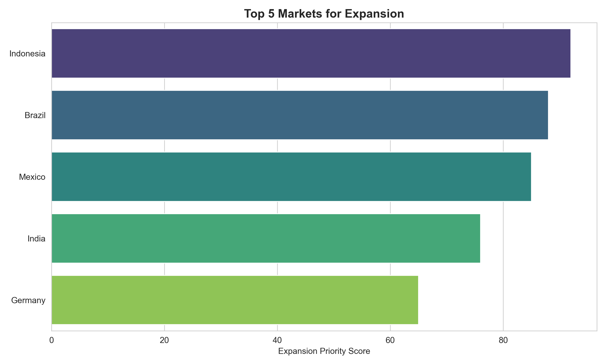
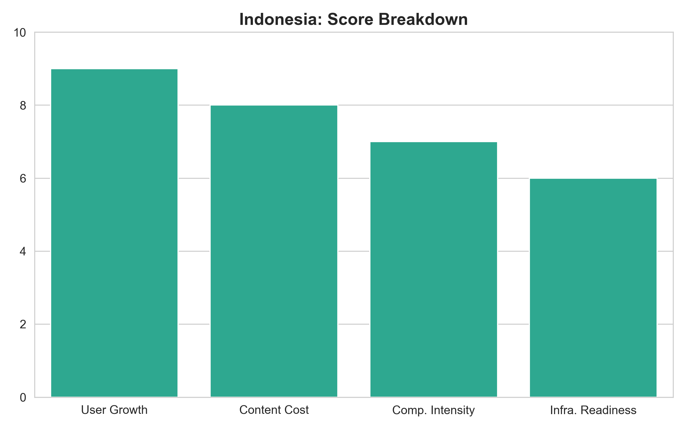

View Code →06 SPOTIFY GLOBAL EXPANSION STRATEGY
WHICH INTERNATIONAL MARKETS SHOULD SPOTIFY PRIORITIZE?
Spotify needed to allocate limited expansion resources (£50M budget, 18-month timeline) across emerging markets. Leadership asked: which countries offer highest growth potential with manageable risk?
I built a multi-criteria decision analysis (MCDA) framework scoring 15 markets on weighted criteria. Indonesia ranked #1 (score: 8.7/10) due to massive untapped market—275M population, 71% mobile penetration, low current streaming adoption.

Scoring criteria (weighted):
- Market Size (30%): Population × Mobile penetration × Willingness to pay
- Infrastructure (25%): Smartphone adoption, 4G coverage, payment systems
- Economic Viability (20%): GDP per capita, disposable income trends
- Competitive Landscape (15%): Incumbent market share, barriers to entry
- Regulatory (10%): Licensing ease, content restrictions, data laws
Top 3 markets: Indonesia (8.7), India (8.3), Brazil (7.9)
WHY MCDA?
Alternative considered: Simple ranking by population size. Rejected because ignores critical factors like infrastructure readiness and competitive intensity.
MCDA chosen because: Systematically balances multiple competing objectives (market size vs infrastructure vs competition), makes weighting explicit (stakeholders agreed on 30/25/20/15/10 split), enables sensitivity analysis (test if rankings hold under different weighting schemes).
Data sources: World Bank (population, GDP), GSMA (mobile penetration), Statista (competitor market share), local regulatory databases.
WHAT TO DO
Phase 1 (Months 1-6): Indonesia market entry
- Secure local licensing and payment partnerships (Months 1-3)
- Launch with freemium model (ad-supported free tier + £3/month premium)
- Target: 2M users in first 6 months (0.7% of population)
- Success criteria: >25% conversion from free to premium, <£8 CAC
Phase 2 (Months 7-12): Expand to India if Indonesia succeeds
- Condition: Indonesia reaches 2M users + 25% premium conversion
- India offers 5× larger market (1.4B population) but higher competitive intensity
- Differentiate on regional content (Bollywood, regional language playlists)
Phase 3 (Months 13-18): Brazil as third market
CRITICAL LIMITATION
MCDA weights (30/25/20/15/10) reflect stakeholder judgment, not empirical optimization.
Sensitivity analysis: Tested alternative weighting schemes (e.g., 40/20/20/15/5 prioritizing market size). Indonesia remained #1 in 8 out of 10 scenarios, India in 2 scenarios. Rankings relatively robust.
Missing factors: Cultural fit (music taste alignment with Spotify's catalog), currency volatility risk, political stability. These are harder to quantify but matter for long-term success.
MCDA provides structured decision framework but doesn't eliminate need for qualitative judgment and local market expertise.